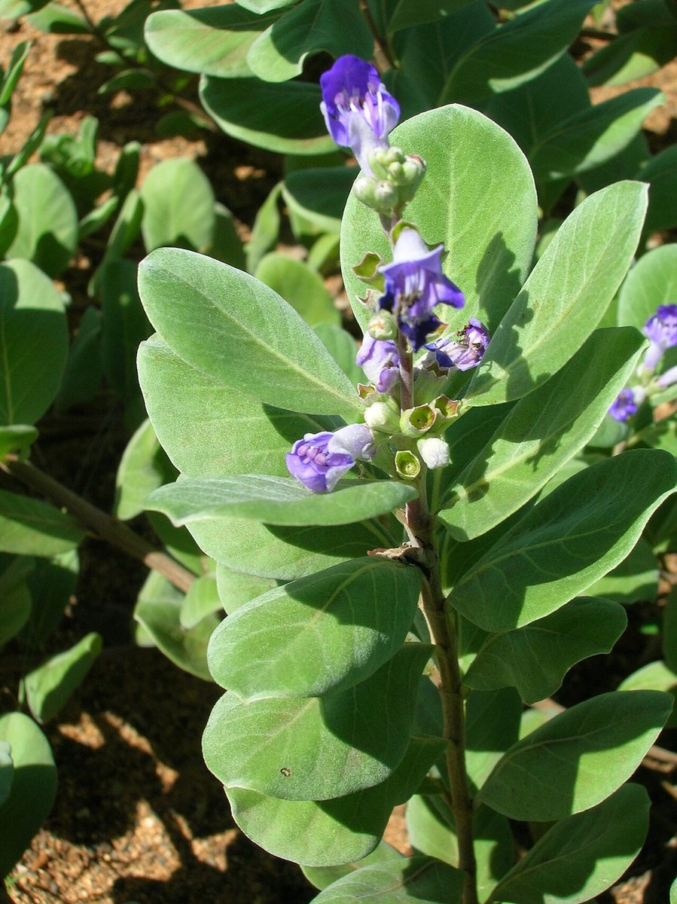

COMMON Dune Beach strand
Vitex rotundifolia
pōhinahina, kolokolo kahakai · beach vitex, roundleaf chastetree


Quick facts
| Family | Lamiaceae |
|---|---|
| Scientific name | Vitex rotundifolia |
| Hawaiian name(s) | pōhinahina, kolokolo kahakai |
| English name(s) | beach vitex, roundleaf chastetree |
| Status | Indigenous (native, non-endemic) |
| Conservation | — |
| Coastal zones | Dune Beach strand |
| Occurrence | Indigenous trailing sub-shrub of Kauaʻi dunes and back-beach edges; present on stabilized sand at Māhāʻulepū and the low dunes above Kalalau and Nuʻalolo Kai beaches. Its trailing habit knits the sand together. |
How to identify
- Growth form
- A prostrate to sprawling woody sub-shrub, forming trailing mats up to several metres across but only a few dm tall, rooting at the nodes.
- Size
- Trailing mats to several m across; rarely more than 30 cm tall on exposed dunes.
- Leaves
- Opposite (Lamiaceae signature), simple, rounded to obovate, 2–5 cm, thick, silvery-green on the upper surface and densely white-hairy below, entire-margined. Aromatic when crushed.
- Flowers
- Violet-blue (occasionally pale lavender), tubular, 1–1.5 cm long, in short terminal spike-like clusters just above the leafy mat. Two-lipped corolla with the lower lip larger.
- Fruit / seed
- A small (~5 mm) rounded dark drupe, ripening blackish.
- Bark / stem
- Slender woody trailing stems that root at the nodes.
- Where it sits on the coast
- Open sandy dune tops and back-beach sand where the strand grades into dune. Not on rocky sea cliffs.
Clinchers (features that lock the ID)
- Rounded, opposite, silvery-green leaves with a strong aromatic scent when crushed.
- Violet-blue two-lipped tubular flowers in short terminal spikes above trailing mats.
- Prostrate woody habit rooting at the nodes across open dune sand.
Look-alikes
- Sesuvium portulacastrum (ʻākulikuli) — Also prostrate on sand, but leaves are succulent fleshy cylinder- oblong (not rounded and dry), flowers are pink 5-petaled starlets (not tubular violet-blue), and there is no aromatic scent.
- Ipomoea pes-caprae (pōhuehue) — A vine with much longer stems, alternate two-lobed "goat's foot" leaves, and pink funnelform morning-glory flowers rather than opposite silvery leaves and violet tubular flowers.
Ecology
Sand-stabilizing pioneer of Pacific-basin coasts. Trailing stems root at the nodes and knit windblown sand into stable dune surfaces; its low aromatic canopy discourages some herbivores. [16], [21], [22]
Cultural significance
"Pōhinahina" and "kolokolo kahakai" recognize the silvery dune-crawling habit. Framed respectfully; not for harvesting instruction here.